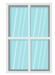
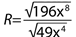

1.
Simplifica a índice común los siguientes radicales.
2.
Responde V sí es verdadero o F si es falso.
¿Son semejantes entre si las siguientes raíces?
3.
Resuelve las siguientes operaciones con radicales y marca con un visto las respuestas
correctas.
4.
Reduce los valores de las raíces hasta su expresión mínima.
5.
Identifica los valores faltantes y completa la tabla.
6.
Simplifica las siguientes raíces y escribe si son semejantes.

7.
Un cono tienen una altura de 50 cm y su volumen es 5 235 cm3. Usa la fórmula del
volumen:
Calcula el valor del radio.
Calcula el valor del radio.
r = cm.
8.
Un experimento mide el tiempo que tarda una sustancia en enfriarse hasta una temperatura T, dado por
la expresión:
Donde t se mide en minutos y T en grados Celsius.
Determina el tiempo que tarda en enfriarse una sustancia hasta los 64 grados Celsius.
Donde t se mide en minutos y T en grados Celsius.
Determina el tiempo que tarda en enfriarse una sustancia hasta los 64 grados Celsius.
t = minutos.
9.
Roberto está diseñando una ventana en forma de paralelogramo. La base de la ventana es de 6 √3
metros y su altura es igual a √45 . ¿Cuál es el área de la
ventana?

A =
√
minutos.
10.
Un tanque de agua tiene un volumen de 54π m3. Su altura es de 6 √2m. ¿Cuál es el radio de la base del cilindro? Usa la
fórmula del volumen V=πr2h.
11.
Un ingeniero está evaluando la resistencia de un material cuya resistencia se calcula con la
siguiente fórmula: 
Simplifica la expresión de la resistencia R.
Simplifica la expresión de la resistencia R.
12.
Esteban está creando una estructura de acero en forma de triángulo. El área de un triángulo se da
por la expresión
Determina la longitud de la base y la altura del triángulo.
Determina la longitud de la base y la altura del triángulo.
13.
Realiza la siguiente rutina de pensamiento.